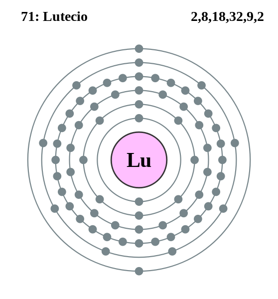

|
|
||
|
LUTENCIO El lutecio se describió por primera vez en 1907, se produce en prácticamente todos los minerales que también contiene itrio, incluida la monacita. El nombre original del elemento se cambió en 1949. Este metal puro es difícil de aislar. Es de color blanco plateado y relativamente estable en aire. Los nucleidos de lutecio estables emiten radiación beta pura (después de la activación) y pueden utilizarse como catalizadores en reacciones pirolizantes, de alquilación, hidrogenación y polimerización. No se conoce ningún otro uso comercial del lutecio. |
 |
DATOS Número Atómico: 71 Peso Atómico: 175.00 Electronegatividad: 1,27 Configuración Electrónica: [Xe]4f145d162 Estados de Oxidación: +3 No. de Electrones de Valencia: 2 |